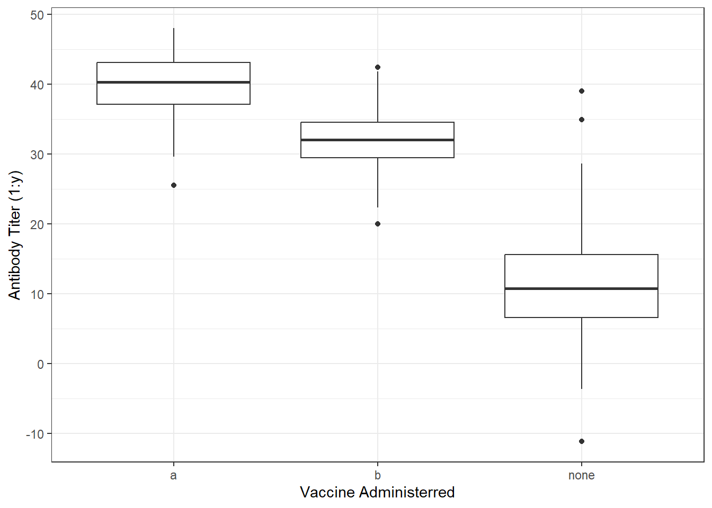

For this data exercise, I will produce a synthetic data set and then use plots and tables to explore the synthetic data. Lastly, I will use a linear model to test the associations built within the data and use a logistic model to test if it is able to capture the same patterns within the synthetic data.
Generating Synthetic Data
I will start by opening the packages that I need to create multiple types of data.
library(dplyr)
Attaching package: 'dplyr'
The following objects are masked from 'package:stats':
filter, lag
The following objects are masked from 'package:base':
intersect, setdiff, setequal, union
library(purrr)library(lubridate)
Attaching package: 'lubridate'
The following objects are masked from 'package:base':
date, intersect, setdiff, union
library(ggplot2)library(here)
here() starts at C:/Users/rrsta/OneDrive/Desktop/MADAcourseexercises/MADAcourserepo
library(readr)library(broom)library(parsnip)
I will then set a seed, which makes a random string reproducible when ran on another system. I will also give R a number of values to produce.
set.seed(3) #Set seed to 3n_patients <-150#Make 150 the number of patients
To create variables, I will begin with an empty data frame. In this example I will use the example of a vaccine trial. This data is not based on a real vaccine trial, but it will have variables that one would find in a clinical trial.
vac_data <-data.frame(patient_id =numeric(n_patients),age =numeric(n_patients),gender =character(n_patients),vac_group =character(n_patients),vac_date = lubridate::as_date(character(n_patients)),disease =integer(n_patients),antibody =numeric(n_patients),adverse_event =integer(n_patients)) #Set a blank data frame called vac_data with the variables, patient_id, age, gender, vac_group, vac_date, disease, antibody, and adverse_event
Next, I will begin to generate the data for each of the aforementionned variables in the blank data frame.
vac_data$patient_id <-1:n_patients #Set random values for patient IDvac_data$age <-round(rnorm(n_patients, mean =25, sd =5), 1) #Set age to be normally distributed with a mean of 25 and sd of 5vac_data$gender <- purrr::map_chr(sample(c("male", "female", "other"), n_patients, replace=TRUE), as.character) #Set gender to be male, female, or othervac_data$vac_group <- purrr::map_chr(sample(c("a", "b", "none"), n_patients, replace=TRUE), as.character) #Set the vaccine group to a theoretical dose a (a), dose value b (b), or to no vaccine (none)vac_data$vac_date <- lubridate::as_date(sample(seq(from = lubridate::as_date("2023-01-01"), to = lubridate::as_date("2023-12-31"), by ="days"), n_patients, replace =TRUE)) #Set the date values to be randomly assigned by day between the first day and last day of the year 2023vac_data$disease[vac_data$vac_group =="a"] <- purrr::map_int(sample(0:1, sum(vac_data$vac_group =="a"), replace =TRUE, prob =c(0.9, 0.1)), as.integer) #Set disease as 1 and no disease as 0, with a 90% vaccine efficacy for vaccine avac_data$disease[vac_data$vac_group =="b"] <- purrr::map_int(sample(0:1, sum(vac_data$vac_group =="b"), replace =TRUE, prob =c(0.85, 0.15)), as.integer) #Set vaccine b efficacy to be 85%vac_data$disease[vac_data$vac_group =="none"] <- purrr::map_int(sample(0:1, sum(vac_data$vac_group =="none"), replace =TRUE, prob =c(0.5, 0.5)), as.integer) #Set the disease outcome to be 50% chances that one will get the disease (1) or not (0) without recieving a vaccine (none)
I initially coded it with the number of items being n_patients, but I received an error because there were less “a”, “b”, and “none” values than the number of patients. To fix this, I asked ChatGPT to show me how not to create extra values in this scenario and it output the sum() function. Each variable would have a total number of values that equals the sum number of vaccine types given. This will not allow it to exceed the maximum and values can be replaced. Additionally, because the disease outcome (0=no, 1=yes) should correspond to the vaccine (a,b, or none), I assigned each vaccine group was assigned an efficacy probability.
When adding an antibody titer variable (antibody) we will assume that the antibody titer is normally distributed in the patients and that vaccine efficacy is positively correlated with antibody titer. This means that vaccine a will have a higher mean than vaccine b. None have very low levels with a high sd to reflect that some individuals may ahev had past exposures to the disease.
vac_data$antibody [vac_data$vac_group =="a"] <-round(rnorm(sum(vac_data$vac_group =="a"), mean =40, sd =5), 1) #The first vaccine has the highest probability of preventing disease so it has the highest mean antibody titer of 1:40 and a small standard deviationvac_data$antibody [vac_data$vac_group =="b"] <-round(rnorm(sum(vac_data$vac_group =="b"), mean =32, sd =5), 1) #The second vaccine has the second highest probability of preventing disease so it has the second highest mean antibody titer of 1:32vac_data$antibody [vac_data$vac_group =="none"] <-round(rnorm(sum(vac_data$vac_group =="none"), mean =10, sd =10), 1) #No vaccine has a mean of 10 with a high standard deviation, of 10, to account for past exposures at different time points
Lastly, adverse events will only occur if the individual has recieved the vaccine. Other conditions seen in the “none” group will not be resorded as adverse events because it would jsut be the placebo effect. Because of this the none group will always have 0 for adverse events.
vac_data$adverse_event [vac_data$vac_group =="a"] <- purrr::map_int(sample(0:1, sum(vac_data$vac_group =="a"), replace =TRUE, prob =c(0.6, 0.4)), as.integer) #Setting adverse event probability for vaccine a to 40%vac_data$adverse_event [vac_data$vac_group =="b"] <- purrr::map_int(sample(0:1, sum(vac_data$vac_group =="b"), replace =TRUE, prob =c(0.8, 0.2)), as.integer) #Setting adverse event probability for vaccine b to 20%vac_data$adverse_event [vac_data$vac_group =="none"] <- purrr::map_int(sample(0:1, sum(vac_data$vac_group =="none"), replace =TRUE, prob =c(1.0, 0.0)), as.integer) #Setting adverse event probability for no vaccine to 0%
I will now save the synthetic dataset as a cvs file
I will now check the synthetic data set with summary stats and then examine the structure.
summary(vac_data) #checking summary stats
patient_id age gender vac_group
Min. : 1.00 Min. :13.00 Length:150 Length:150
1st Qu.: 38.25 1st Qu.:21.32 Class :character Class :character
Median : 75.50 Median :25.15 Mode :character Mode :character
Mean : 75.50 Mean :24.82
3rd Qu.:112.75 3rd Qu.:28.48
Max. :150.00 Max. :34.70
vac_date disease antibody adverse_event
Min. :2023-01-01 Min. :0.0000 Min. :-11.20 Min. :0.0
1st Qu.:2023-04-03 1st Qu.:0.0000 1st Qu.: 22.32 1st Qu.:0.0
Median :2023-06-22 Median :0.0000 Median : 32.00 Median :0.0
Mean :2023-06-29 Mean :0.2467 Mean : 28.52 Mean :0.2
3rd Qu.:2023-09-30 3rd Qu.:0.0000 3rd Qu.: 37.77 3rd Qu.:0.0
Max. :2023-12-26 Max. :1.0000 Max. : 48.00 Max. :1.0
I now use a table to check the number if individuals in each vaccine group that had the disease outcome.
table(vac_data$disease,vac_data$vac_group)#Create table with disease versus vaccine group
a b none
0 42 52 19
1 2 12 23
I will now check the distributuion of antibody titer values depending on vaccine group by using a box plot.
ggplot(vac_data, aes(x = vac_group, y = antibody)) +geom_boxplot() +labs(x ="Vaccine Administerred", y ="Antibody Titer (1:y)") +theme_bw()

The data should not include values of negative values, so this does not reflect a real-life scenerio. However, I was unable to add a minimum value to the normally distributed, generated data. So these values must be removed through data-cleaning steps before analysis. ## Cleaning synthetic data
vac_data2 <- vac_data %>%filter(antibody >=0) #Removing zero and negative datasummary(vac_data2) #Checking total number of values and that negative values of antibody were removed
patient_id age gender vac_group
Min. : 1.00 Min. :13.00 Length:146 Length:146
1st Qu.: 39.25 1st Qu.:21.32 Class :character Class :character
Median : 76.00 Median :25.15 Mode :character Mode :character
Mean : 75.84 Mean :24.80
3rd Qu.:112.75 3rd Qu.:28.40
Max. :150.00 Max. :34.70
vac_date disease antibody adverse_event
Min. :2023-01-01 Min. :0.000 Min. : 0.10 Min. :0.0000
1st Qu.:2023-04-02 1st Qu.:0.000 1st Qu.:24.02 1st Qu.:0.0000
Median :2023-06-19 Median :0.000 Median :32.70 Median :0.0000
Mean :2023-06-27 Mean :0.226 Mean :29.44 Mean :0.2055
3rd Qu.:2023-09-29 3rd Qu.:0.000 3rd Qu.:38.02 3rd Qu.:0.0000
Max. :2023-12-26 Max. :1.000 Max. :48.00 Max. :1.0000
Three negative values were removed from the antibody column, which reduced the sample. The remaining sample will be used to check for the trends that I built into the data set.
Checking the Trends
I will do some data processing before generating models to make the code more robust. First, I select the variables I want to analyze for the built-in trends. Next, I convert the vaccine group variable to a factor instead of a character. Lastly, I check that this was successful with summary stats.
vac_data2 <- vac_data2 %>%select(vac_group, disease, antibody, adverse_event) #Select the variables to analyze from vac_data2vac_data2$vac_group <-as.factor(vac_data2$vac_group) #change vac_group from a character to a factorsummary(vac_data2) #check for successful processing
vac_group disease antibody adverse_event
a :44 Min. :0.000 Min. : 0.10 Min. :0.0000
b :64 1st Qu.:0.000 1st Qu.:24.02 1st Qu.:0.0000
none:38 Median :0.000 Median :32.70 Median :0.0000
Mean :0.226 Mean :29.44 Mean :0.2055
3rd Qu.:0.000 3rd Qu.:38.02 3rd Qu.:0.0000
Max. :1.000 Max. :48.00 Max. :1.0000
str(vac_data2$vac_group) #check that vac_group is a factor
First, I will check the vaccine efficacy trend that I built into the data set. I will use a linear regression model to find associations between disease outcome and vaccine group.
vac_group_disease <-linear_reg() %>%set_engine("lm") %>% parsnip::fit(disease ~ vac_group, data = vac_data2)tidy(vac_group_disease)
It seems that neither vaccine group b or no vaccine correlate with disease outcome. In this case, the vaccine b would not be effective. instead, we want to look at another model to display the data trends. I will try using a linear model with interactions between antibody and vaccine group variables.
This table shows an that when considering the interaction of the antibody levels and vaccine group, there is a negative association with disease. However, this association is not statistically significant. This tells me that I should be using a logistic regression model instead. I will produce a logistic regression with vaccine group versus disease outcome.To use logistic regression, I must first change disease to a factor.
vac_data2$disease <-factor(vac_data2$disease) #convert disease into a factor rather than an integervac_group_disease3 <-logistic_reg() %>%set_engine("glm", family = binomial) %>% parsnip::fit(disease ~ vac_group, data = vac_data2)tidy(vac_group_disease3) #I used ChatGPT to help me convert the previous code I used for a linear model to code that produces a logistic regression
The vac group b has a lower disease outcome estimate than the none group, despite them both being positive. The p-value for both groups is p<0.05.
Now, I will check the antibody titer trends that I built into the data set. I will use a linear regression model to find associations between the vaccine group and antibody levels.
vac_group_antibody <-linear_reg() %>%set_engine("lm") %>% parsnip::fit(antibody ~ vac_group, data = vac_data2)tidy(vac_group_antibody)
It seems that both estimates are negative, with the vaccine group having a greater estimate than the none group, which is consistent with the trend of greater antibody levels in those that received the vaccine.
Lastly, I will check the adverse effect trends that I built into the data set. will use a logistic regression model to find associations between the vaccine group and adverse effects.
vac_data2$adverse_event <-factor(vac_data2$adverse_event) #convert adverse event into a factor rather than an integervac_group_ae <-logistic_reg() %>%set_engine("glm", family = binomial) %>% parsnip::fit(adverse_event ~ vac_group, data = vac_data2)tidy(vac_group_ae) #logistic regression of adverse event (outcome) depending on vaccine group
There is a higher estimate for adverse events for the vaccine group b than the none group. However, this estimate is only statistically significant for the vaccine group b.
Overall, I cannot conclude that the synthetic data produced had my intended built-in-trends. However, more complex models such as multivariate regressions, might be able to identify these trends.